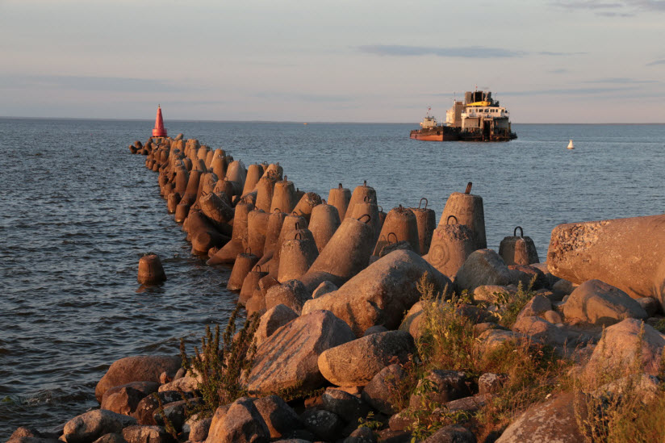
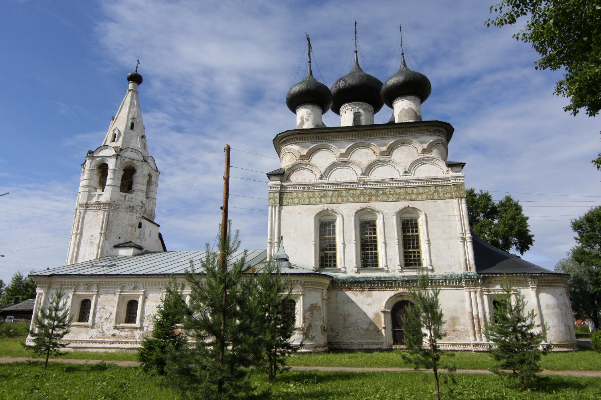
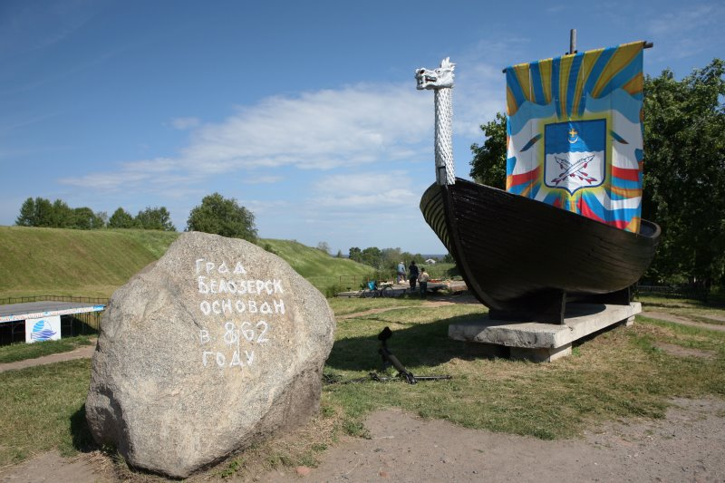

Белое озеро

адрес: Белозерск
Белое озеро – это крупное пресноводное озеро, расположенное недалеко от города Белозерск в Вологодской области России. Оно является одной из главных природных достопримечательностей региона и привлекает множество туристов своей красотой и уникальными особенностями.
Озеро получило свое название благодаря светлому песчаному дну, которое придает воде светло-белый оттенок. Этот эффект создается за счет большого количества мелкодисперсных частиц, таких как глина и известняк, которые находятся на дне озера.
Белое озеро является частью Белозерского национального парка и окружено живописными лесами и холмами. Оно простирается на площади около 46 квадратных километров, а его глубина достигает до 15 метров. Вода в озере чистая и прозрачная, что делает его идеальным местом для рыбалки, плавания и других видов активного отдыха.
Церковь Всемилостливого Спаса

адрес: Белозерск, ул. Дзержинского, 8.
Церковь Всемилостливого Спаса (церковь Спаса-На-Сени) - это историческое здание в городе Белозерске, расположенном в Вологодской области России. Эта церковь является одним из символов города и значимым памятником русской архитектуры.
Церковь Всемилостливого Спаса была построена в 1670 году на месте более ранней деревянной церкви, которая была разрушена пожаром. Она сочетает элементы русского и западного архитектурных стилей и является примером белозерской школы архитектуры.
Здание церкви выполнено из кирпича и имеет особенный архитектурный облик. Оно выделяется своими изысканными декоративными элементами, такими как арочные окна, фронтон и декоративные карнизы. Церковь имеет пятиглавую форму с пятью куполами, которые украшены крестами.
Внутри церкви Всемилостливого Спаса также преобладает богатая декорация. Иконостас, выполненный в стиле московского барокко, украшен иконами и резными элементами. Стены церкви украшены фресками, изображающими религиозные сюжеты.
Церковь Всемилостливого Спаса имеет большое историческое и культурное значение для города Белозерска. Она является объектом туристического интереса и привлекает множество посетителей своей красотой и архитектурным изяществом.
Памятник Ладья

адрес: Белозерск, ул.Советский вал
Памятник "Ладья" представляет собой изображение древнерусской ладьи, традиционного судна, которое использовалось для плавания по водным путям и озерам. Скульптура изображает стилизованную ладью из металла или других материалов, обычно расположенную на постаменте.
Памятник символизирует связь Белозерска с водным транспортом и историческую роль рек и озер в развитии города. Он также является отражением богатой культурной истории этого региона, связанной с водными путями торговли, рыболовства и прочими видами деятельности.
Памятник "Ладья" становится одной из достопримечательностей Белозерска и привлекает внимание туристов, а также является символом города и его исторического наследия. Он напоминает о значимости водной тематики и связи города с водными путями в прошлом и настоящем.
Собор Успения Пресвятой Богородицы
адрес: Белозерск, ул.К-Маркса д. 43
Собор был построен в 1777 году и служил как главный храм мужского монастыря Успения Пресвятой Богородицы. В то время это был один из наиболее значимых центров православной веры в регионе. Собор является прекрасным примером русской деревянной архитектуры XVIII века.
Особенностью Белозерского собора является его архитектурный стиль. Он представляет собой комбинацию элементов русского деревянного зодчества и западноевропейского барокко. Собор имеет высокую пятиглавую башню с куполами, декорированными золочением. Фасады собора украшены богатой резьбой и нарядными деревянными деталями.
Внутреннее убранство Белозерского собора также привлекает внимание своей красотой и оригинальностью. Стены и иконостас собора украшены деревянной резьбой, которая выполнена мастерами великолепно. Внутри собора находятся иконы, изображающие святых и библейские сцены.
Собор Успения Пресвятой Богородицы в Белозерске считается национальным памятником России и включен в список Всемирного наследия ЮНЕСКО. Он привлекает много туристов и паломников своей архитектурой, исторической значимостью и духовной атмосферой.
Сегодня Белозерский собор продолжает служить своему назначению и является активным православным храмом. Он олицетворяет богатое наследие русской культуры и религии, а также является важным символом для местного сообщества и всех, кто посещает этот прекрасный город.
Памятник Белозерскому судаку
адрес: Белозерск, л. наб.П.К. Георгиевского, 59
8 октября 2015 года в Белозерске состоялось открытие памятника Белозерскому судаку. Не случайно такой памятный знак решили установить в этом городе, ведь рыбным промыслом белозера занимаются с древнейших времен. Белозерье еще в XV веке было Государевым рыбным двором, поставлявшим к царскому столу снеток, стерлядь и судака. В годы военного лихолетья судак не дал белозерам умереть с голода, да и сейчас, оставаясь самой ценной промысловой рыбой, судак кормит местное население, дает заработок рыболовным артелям.
В июне 2015 года был объявлен конкурс на лучший эскиз памятника, в результате был выбран проект, который изображает судака на гребне волны. Автор эскиза - житель Белозерска Василий Смирнов. Жители Белозерска также предлагали сделать скульптуру судака удобной для фотографирования с ней всех желающих или разместить на ней достопримечательности древнего города. Предлагали изобразить судака, плывущего на волнах озера, или поместить его на плоскую металлическую табличку в виде флюгера и разместить конструкцию на одном из столбов на набережной. Малую скульптурную форму размером полтора метра отлили из чугуна. Ее вес составил почти две тонны. Автор памятника - череповецкий скульптор Александр Михайлович Шебунин.
Церковь Богоявления Господня
адрес: Белозерск, ул. Карла Маркса
Церковь Богоявления была построена в 1690 году в стиле московского барокко. Она является каменным зданием с пятиглавой композицией и прекрасно сочетается с окружающей ее природной красотой. Церковь имеет прямоугольную форму и высокую колокольню с куполом, украшенным золочением.
Архитектурный стиль церкви Богоявления Господня сочетает в себе элементы русского барокко и уникальные черты, присущие Белозерской архитектурной школе. Фасады здания украшены резными деталями, статуэтками и барельефами. Церковь имеет изящные оконные арки и выразительные декоративные элементы, которые придают ей элегантность и утонченность.
Внутреннее убранство церкви Богоявления Господня также впечатляет своей красотой. Стены и иконостас церкви украшены фресками и иконами, которые выполнены в характерном стиле русской иконописи. Внутри церкви создается атмосфера покоя и святости, в которой посетители могут помолиться и почувствовать духовное восхождение.
Церковь Богоявления Господня в Белозерске является памятником истории и культуры России. Она привлекает туристов и паломников своей архитектурой, религиозным значением и красотой. Вместе с другими историческими сооружениями в городе Белозерске, церковь Богоявления Господня создает уникальную атмосферу и позволяет почувствовать дух прошлого и богатство православной традиции.
Колонна императору Николаю I

адрес: Белозерск
Колонна императору Николаю I является одним из символов исторического значения в Белозерске. Она находится на прекрасной набережной Белозерского озера и служит напоминанием о великой эпохе российской истории.
Колонна представляет собой изящную дорическую колонну из белого мрамора, установленную на пьедестале. На вершине колонны расположен бюст императора Николая I. На пьедестале также выгравированы слова, посвященные императору и его визиту в Белозерск.
Визит императора Николая I в Белозерск был значимым событием для города. Он осмотрел местные достопримечательности, общался с местными жителями и выразил свою поддержку развитию региона. В честь этого визита была возведена колонна, чтобы увековечить память о пребывании императора в Белозерске.
Колонна императору Николаю I стала не только историческим символом, но и популярным местом для туристов и посетителей. Она привлекает внимание своей красотой и значимостью и стала одной из основных достопримечательностей города.
Часовня Кирилла Новоезерского
_(cropped).jpg)
адрес: Белозерск, угол Советского просп. и ул. Дзержинского
Часовня была построена в начале XVIII века и представляет собой небольшое каменное здание с главкой и куполом. Она имеет традиционную для русской православной архитектуры форму, сочетающую элементы барокко и классицизма. Фасад часовни украшен простыми линиями и декоративными деталями.
Внутри часовни Кирилла Новоезерского находятся иконы и алтарь, оформленные в соответствии с православной традицией. Она служит как святое место, где верующие приходят молиться и возносить свои молитвы святому Кириллу Новоезерскому.
Святой Кирилл Новоезерский был одним из первых учеников святого Сергия Радонежского и основателем монастыря на озере Сеж. Он совершил значительный вклад в развитие русской православной церкви и был уважаем и почитаем верующими. Часовня, посвященная ему, является местом паломничества и п оклонения его святыне.
Церковь Илии Пророка
адрес: Белозерск, ул. Шукшина, 21
Церковь Илии Пророка в Белозерске была построена в XVII веке и является прекрасным примером русской деревянной архитектуры. Она имеет типичную для своего времени конструкцию, состоящую из простого прямоугольного сруба с пятиглавой башней и куполами. Фасады церкви украшены декоративными резными элементами, которые придают ей особый шарм и изящество.
Внутри церкви Илии Пророка в Белозерске находятся иконы, фрески и иконостас, которые являются важной частью православной религиозной практики. Иконы изображают святых и библейские сцены, а фрески на стенах передают духовные темы и события из жизни Иисуса Христа.
Церковь Илии Пророка служит местом богослужений и духовной практики для верующих. Она создает атмосферу покоя и святости, где люди приходят помолиться, приобщиться к вере и получить духовное утешение.